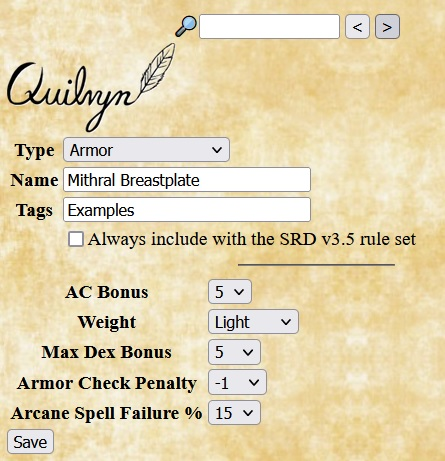
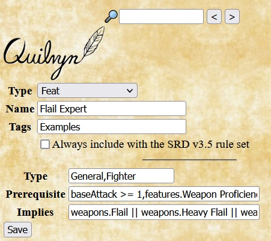

Adding Animal Companions and Familiars

Identical information is required for adding an animal companion or familiar. Along with the creature's basic attributes, Quilvyn displays fields for entering Hit Dice, Armor Class, Attack Bonus, Damage, Size, and Min Master Level. Quilvyn expects the Damage value to indicate the number and type of damage dice, optionally followed by a bonus or penalty. For example, an Owlbear animal companion would have a Damage attribute of 1d6+5,1d6+5,1d8+2 (two claws and a bite); while a Baboon's Damage would be 1d6+3. When entering Armor Class, Attack Bonus, and Damage, include any bonus or penalty from elements such as dexterity, natural armor, and strength. Min Master Level is used for alternative companions that require the character to be of higher level before they can be selected.
The example shown is taken from the statistics for the monkey in the Monster Manual. Note that the monkey receives +2 size and +2 dexterity bonuses to Armor Class, resulting in an overall AC of 14, and that the monkey's low strength gives a -4 penalty to damage.
Adding Armors
Identical information is required for adding a custom type of armor or shield. Quilvyn displays fields for the boost in AC gained by using the armor or shield, the item's weight category, the maximum dexterity AC bonus allowed when using the item, the penalty applied to skills such as Escape Artist, and the percentage chance of failure when casting arcane spells while using the item.
The example shown gives the values for a breastplate made from mithril, as discussed in the Special Materials section of the SRD. Mithril items reduce the item's weight by 1 category, spell failure chances by 10%, and armor check penalty by 3 while increasing the maximum dexterity bonus by 2.
Adding Classes

FILL
Adding Deities
When adding a custom deity, Quilvyn displays fields to add the deity's alignment, favored weapon or weapons, and domains. Multiple domains entered in the Domains text box should be separated by commas. Similarly, if the deity's favored weapon includes multiple weapons (e.g., all flails), the individual weapons should be listed in the Favored Weapons text box, separated by commas.
Adding Feats
When adding a custom feat, Quilvyn displays fields to note the feat type(s) and any requirements that should be met to select it. The feat type will typically be one of General, Item Creation, or Metamagic; you can also include Fighter in the feat type box to indicate that this feat can be selected as a fighter bonus feat. Quilvyn allows you to specify two kinds of requirements for a feat. The Prerequisite box lists any requirements that must be met to select the feat; Quilvyn generates a validation error if the feat is selected for a character who does not meet these requirements. The Implies box lists any requirements that, while not strictly required, make the feat useless if not met. For example, although the rules don't require a caster level to select it, the Combat Casting feat from the core rules is likely to be useful only to a spell caster. Quilvyn will generate a validation warning if the Implies requirements are not met. The effects of a feat are entered separately as a feature, described below.
The example shows the entry for a general feat named Flail Expert that can be selected as a fighter bonus feat. The Prerequisite box note that it requires a baseAttack value of at least 1 and Weapon Proficiency (Martial), and the Implies box notes that the feat is useless unless the character has a flail.
Adding Features

In Quilvyn, Features describe the effects of feats, classes, and racial features. When adding a rule for a new Feature, select the section of the character sheet where the note for the Feature should appear, then enter the note text. Much like the starred notes discussed above, Quilvyn interprets the text of this note to update affected attributes. In the example shown, Quilvyn will add 2 to the Bluff and Perform (Oratory) skill modifier values for any character with that feature.
Adding Goodies

FILL
Adding Languages

Adding a new language requires only specifying the name. Once added, languages can be added to a character by selecting from the language list and can be included in the list of languages automatically known by custom races.
The example shows the entry for a language called Scaletongue, used below in the example for entering a custom race.
Adding Paths

FILL
Adding Races

FILL
Adding Skills

When adding a custom skill, Quilvyn displays fields that allow you to enter the skill's key ability, whether the skill can be used untrained, the list of classes for which the class skill, and any synergies that the custom skill has with other skills.
The example shows the entry for the Sailing skill, which is related to intelligence, requires training to use, and is a class skill for several core classes.
Adding Spells

When adding a custom spell, Quilvyn displays fields that allow you to enter the spell's school, the list of classes and levels for the spell, the description of the spell, and whether or not the spell can be placed into a potion that can be drunk or an oil that can be applied. Spell descriptions can contain references to character attributes; see the discussion below for how to include these.
The example shows the entry for the transmutation spell Enhance Skill, which is a level 3 spell for clerics, sorcerers, and druids. It can be invoked using an imbibed potion, and the description notes that spell can be cast over short range and lasts for a number of rounds equal to the caster level.
Adding Weapons

When adding a custom weapon, Quilvyn displays fields that allow you to enter the weapon's group (Simple, Martial, or Exotic), category (Unarmed, Light, One-Handed, Two-Handed, or Ranged), damage, critical threat range and multiplier, and (for ranged weapons) range increment.
The example shows the entry for a boomerang, an exotic ranged weapon with a 40' range increment that inflicts d4 damage, with critical threat and damage of 19-20/x2.